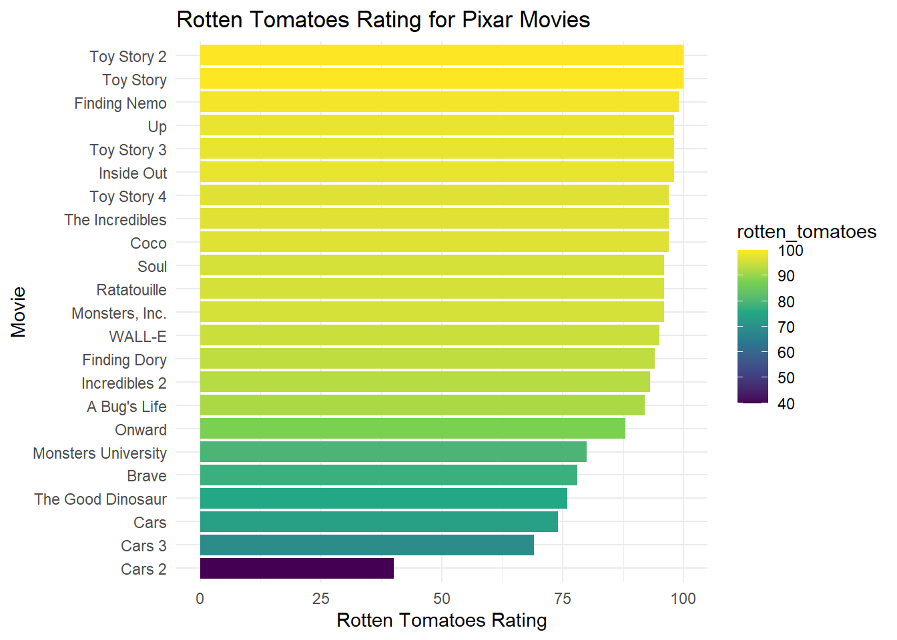
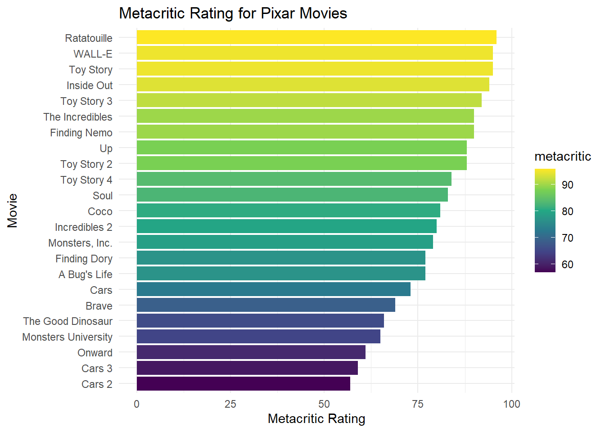

library(dplyr)
library(ggplot2)
library(tidyverse)
pixar_films <- readr::read_csv('https://raw.githubusercontent.com/rfordatascience/tidytuesday/main/data/2025/2025-03-11/pixar_films.csv')
public_response <- readr::read_csv('https://raw.githubusercontent.com/rfordatascience/tidytuesday/main/data/2025/2025-03-11/public_response.csv')
pixarMovies <- merge(pixar_films, public_response, by = "film") |> select(1, 3:9) |> slice(1:10, 12:24)Blog Post #1: Movie Ratings
#Highest rotten tomatoes Rating
high_rotten <- pixarMovies |> arrange(desc(rotten_tomatoes)) |> select(1,5) |>
mutate(Movie = fct_reorder(film, rotten_tomatoes))#Highest meta critic Rating
high_meta <- pixarMovies |> arrange(desc(metacritic)) |> select(1,6) |>
mutate(Movie = fct_reorder(film, metacritic))
View(high_meta)#Highest critics choice Rating
high_critic <- pixarMovies |> arrange(desc(critics_choice)) |> select(1,8) |> slice(1:21) |>
mutate(Movie = fct_reorder(film, critics_choice))
View(high_critic)Introduction:
This project analyzes Pixar film ratings using a combined data set of movie descriptions and public response metrics. Two data sets were merged to compare ratings across three platforms: Rotten Tomatoes, Metacritic, and Critics Choice. Rotten Tomatoes reports the percentage of positive reviews, Metacritic provides a weighted average critic score, and Critics Choice reflects ratings from professional film critics.The main variables of interest are film title, Rotten Tomatoes rating, Metacritic score, and Critics Choice rating. The data set includes 24 observations and 8 variables. The central question of this analysis is which Pixar films receive the highest overall ratings across these three platforms.
The data come from the TidyTuesday GitHub repository. Linked here: https://github.com/rfordatascience/tidytuesday/blob/main/data/2025/2025-03-11/readme.md
Some films are excluded due to missing ratings, such as Luca, which has no ratings available, and others lack Critics Choice scores which is Toy Story and A Bug’s Life. Meaning those two films were excluded in the Critic’s Choice graph. Additionally, the data set does not include all Pixar films, which should be considered when interpreting the results.
Primary Visualizations
#Rotten Tomatoes
ggplot(data = high_rotten, aes(x = Movie, y = rotten_tomatoes, fill = rotten_tomatoes)) +
geom_col() +
coord_flip() +
labs(y = "Rotten Tomatoes Rating",
title = "Rotten Tomatoes Rating for Pixar Movies") +
scale_fill_viridis_c() +
theme_minimal()
The Rotten Tomatoes visualization shows that Toy Story and Toy Story 2 share the highest rating, each receiving a perfect score of 100. An interesting pattern in this graph is that many films have identical or very similar ratings, making this distribution more compressed than the others. Compared to Metacritic and Critics Choice, Rotten Tomatoes shows the least variation among films, suggesting a generally strong love for Pixar movies.
#Meta Critic
ggplot(data = high_meta, aes(x = Movie, y = metacritic, fill = metacritic)) +
geom_col() +
coord_flip() +
labs(y = "Metacritic Rating",
title = "Metacritic Rating for Pixar Movies") +
scale_fill_viridis_c() +
theme_minimal()
The Metacritic visualization reveals that Ratatouille has the highest Metacritic rating among the films analyzed. This result is interesting because Ratatouille falls closer to the middle of the distribution for both Rotten Tomatoes and Critics Choice ratings. Additionally, the Toy Story films rank lower on Metacritic than they do on the other two platforms, indicating differences in how each rating system evaluates the films.
#Critics Choice
ggplot(data = high_critic, aes(x = Movie, y = critics_choice, fill = critics_choice)) +
geom_col() +
coord_flip() +
labs(
y = "Critic's Choice Rating",
title = "Critic's Choice Rating for Pixar Movies") +
scale_fill_viridis_c() +
theme_minimal()
The Critics Choice visualization indicates that Toy Story 2 holds the highest Critics Choice rating, with Toy Story 3 and Toy Story 4 also ranking within the top five. Although the original Toy Story does not have a Critics Choice rating in this data set, its strong performance in the other two rating systems suggests it likely would have scored highly here as well. Overall, this pattern highlights how well received the Toy Story franchise has been by critics and audiences.
Conclusion and Wrap-Up
One limitation of this analysis is the exclusion of certain films due to missing rating data. While these omissions were necessary to maintain accuracy in the visualizations, they reduce the overall sample size and may slightly limit the conclusions that can be drawn. Aside from this data exclusion, I don’t believe there are any other flaws with my approach. For future analysis I would explore whether film ratings influence the ratings. Another potential direction would be to examine movie runtimes and analyze whether Pixar films have generally increased in length over time of when the movie was released.
Connection to Class Ideas
These visualizations connect to class concepts by following best practices for effective data communication. The bar plots all start at zero, ensuring accurate visual comparison of ratings across films. Additionally, sequential color scales are used to represent low-to-high values, making it easier for viewers to interpret differences in ratings. Together, these design choices help clearly and effectively communicate patterns in the data.